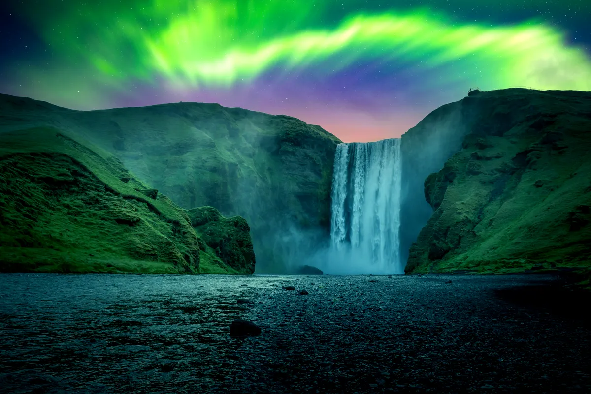

The Icelandic Saga: Chasing Waterfalls & Northern Lights

Welcome to Iceland: Land of Fire and Ice
Iceland is a land of contrasts—an island where fire and ice coexist in a dramatic dance of nature. From the thundering waterfalls that crash into verdant valleys to the glistening glaciers that blanket towering peaks, Iceland offers a natural beauty unlike anywhere else on Earth. Whether you’re chasing the otherworldly Northern Lights or hiking to remote waterfalls in the heart of a volcanic landscape, Iceland’s rugged charm and unpredictable weather will leave you in awe. Get ready for an unforgettable adventure in this land of myths, legends, and untamed wilderness.
Golden Circle: Iceland’s Iconic Loop
For first-time visitors, the Golden Circle is the perfect introduction to Iceland’s natural wonders. This famous route takes you on a journey to some of the country’s most stunning and accessible landmarks. Begin with the Þingvellir National Park, where the North American and Eurasian tectonic plates meet, creating a dramatic rift valley. It’s also the site of Iceland’s ancient parliament, adding a touch of history to the geological wonders.
Next, head to the Gullfoss Waterfall, one of the most famous in Iceland. The sheer power of the water crashing into the canyon below is enough to take your breath away. Then, make your way to Geysir, home to the original hot spring that gave all others their name. The active Strokkur geyser erupts every few minutes, sending boiling water high into the air—an exhilarating sight. The Golden Circle is an easy and stunning way to experience Iceland’s beauty in a single day, but it’s only the beginning of what this magical country has to offer.
Chasing Waterfalls: Iceland’s Liquid Jewels
Iceland is known for its cascading waterfalls, each with its own unique character and charm. Seljalandsfoss is one of the most famous, offering visitors the rare opportunity to walk behind the falls and feel the cool mist on their face. The waterfall’s location at the foot of a mountain only adds to its mystical allure. Just a short drive away, you’ll find Skógafoss, another iconic waterfall that drops 60 meters into a pool below. The power of the water and the rainbows that often form in the spray create an unforgettable experience.
For a more secluded experience, head to Gljúfrabúi, a hidden waterfall nestled in a narrow canyon just a short walk from Seljalandsfoss. Many visitors overlook this gem, but its ethereal beauty is worth the detour. Finally, a visit to the Dettifoss Waterfall in the north is a must for those seeking awe-inspiring power. As Europe’s most powerful waterfall, Dettifoss is an overwhelming sight, with water thundering into the canyon with incredible force.
The Northern Lights: A Spectacular Show in the Sky
Iceland’s natural beauty is not limited to its landscapes—it extends to the night sky as well. The Northern Lights, or Aurora Borealis, are one of the most sought-after natural phenomena in the world, and Iceland is one of the best places to witness this dazzling display of lights. From September to April, the night sky above Iceland is transformed as green, purple, and pink waves of light dance across the horizon.
While the lights are unpredictable, you’ll have the best chance to see them in areas far from city lights. The Thingvellir National Park and the Jökulsárlón Glacier Lagoon are both excellent spots for viewing the Northern Lights. For a truly magical experience, take a late-night tour to one of these locations, where you can watch the colors of the aurora reflect off icy waters or the snow-covered landscape.
Landmannalaugar: Hiking Through Iceland’s Wilderness
For those craving more adventure, Iceland’s wilderness offers endless opportunities for hiking and exploration. One of the most popular trekking destinations is Landmannalaugar, a geothermal wonderland located in the Highlands of Iceland. The area is known for its colorful rhyolite mountains, bubbling hot springs, and rugged lava fields. Hikers can embark on the Laugavegur Trail, a 4-day trek that takes you through volcanic landscapes, across glaciers, and past turquoise lakes. Along the way, you’ll encounter steaming vents, cascading waterfalls, and panoramic vistas that seem straight out of a fantasy novel.
If you're feeling adventurous, the Fimmvörðuháls trek near Skógafoss will lead you through a land shaped by volcanic eruptions and massive glaciers. The challenging hike rewards you with views of erupting craters, glaciers, and valleys filled with wildflowers. Each step brings you closer to understanding the power and beauty of Iceland’s natural forces.
Icelandic Culture: A Land of Myth and History
Beyond its natural beauty, Iceland has a rich cultural heritage that adds a deeper layer to any visit. Reykjavik, the capital, is a vibrant city full of quirky charm, where modern art galleries, cozy cafés, and colorful buildings line the streets. Visit the National Museum of Iceland to learn about the country’s Viking past or explore the Harpa Concert Hall, a stunning architectural marvel.
Iceland’s folklore and myths also play an important role in the country’s identity. The Icelandic sagas, tales of ancient heroes, gods, and spirits, are an integral part of the nation’s literary tradition. Many Icelanders still believe in elves and hidden people, and you’ll find stories of these magical beings woven into the fabric of the island’s culture.
Final Thoughts: A Land of Wonders
Iceland is a place that seems to exist outside of time, where nature’s power and beauty take center stage. Whether you're chasing waterfalls, watching the Northern Lights illuminate the sky, or hiking through vast volcanic landscapes, the island’s rugged charm will leave you awe-struck at every turn. Iceland invites you to experience its wonders with all your senses, to explore its untamed beauty, and to dive into the stories of its past. It’s a land where every corner hides a new adventure, and the magic never truly ends.